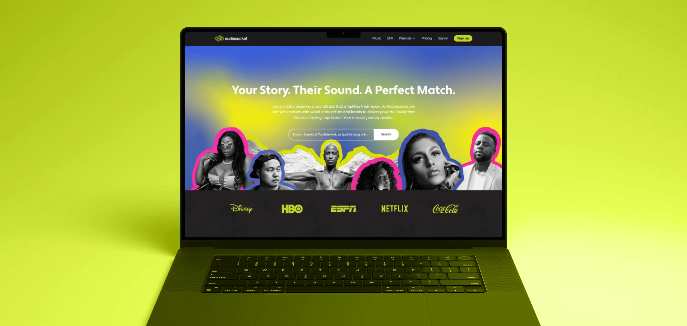

From IT services and facilities management to e-mobility and Web3 launchpads — responsive, production-ready websites built from design to deployment.

Projects
25
Screens
83
Domains
SaaS & AI, Fintech, Web3 & DeFi, Business & services
All websites
25 websites I developed. Filter by domain, or open any project to step through its screens.
Business & services
SNL Solutions
NL Solutions is an IT service company specializing in Web3 project development, blockchain integration, and smart contract solutions. For the Website’s Development, I built a high-performance, scalable architecture emphasizing fast loading and responsive design. The front end was crafted with modern frameworks, ensuring smooth animations and a futuristic look that resonates with the blockchain audience and visually modern digital presence that reflects innovation and trust in the Web3 domain.
Business & services
Audiosocket
Audio Socket connects artists, brands, and creators through a dynamic music licensing platform. I developed the website to handle rich media content efficiently, using optimized audio players, fast-loading visuals, and seamless streaming performance. From design to front-end animations, the entire system was developed to ensure a flawless experience for music lovers and professionals alike.
RJFMS is a Qatar-based facilities management company offering property maintenance, cleaning, and engineering services. For the website, I focused on creating a professional, trustworthy, and service-oriented design, backed by robust development for scalability and multilingual support. With fast-loading pages, responsive grids, and clean interface development, the result is a platform that effectively bridges professionalism with accessibility for local and global clients.
Business & services
Eighteen Motors
Eighteen Motors is an electric vehicle company focused on next-generation e-bicycles. I developed a highly responsive and interactive product showcase website, integrating animation effects, and smooth scrolling to highlight each model’s innovation. The development process prioritized performance optimization and cross-device fluidity. The final product delivers both visual excitement and functional reliability.
Quilltrace brings transparency and decentralization to global supply chains using blockchain technology. I developed the website with a data-driven architecture, that blends enterprise-grade clarity with futuristic aesthetics, node-inspired graphics, and smooth transitions. The development process emphasized security, responsiveness, and scalability, ensuring a flawless experience for clients exploring blockchain-powered supply chain solutions.
SaaS & AI
Orgzit
Orgzit is a powerful CRM platform designed for SMEs to manage data, workflows, and client interactions efficiently. The website was developed to be clean, fast, and conversion-focused, using modular layouts and optimized code structure. I built dynamic sections for product demos, pricing models, and lead generation. The development ensured SEO optimization, scalability, and smooth responsiveness across all devices.
IOT Solutions provides end-to-end Internet of Things services across industries like automation, security, and analytics. I developed the website to reflect technological sophistication and innovation, using interactive diagrams, animated data visualizations, and smart navigation patterns. I implemented responsive frameworks, optimized media assets, and custom integrations to showcase the data. The final product is a future-ready digital interface that demonstrates the company’s technical depth and innovation-driven mindset.
Business & services
Zicklin Contracting
Zicklin Contracting specializes in home renovations and construction excellence. For their website, I focused on frontend development that emphasizes performance, structure, and user engagement. The interface was developed with responsive frameworks to ensure a seamless experience across all devices. I implemented modern UI components with smooth animations, interactive service sections, and a grid-based portfolio layout to highlight completed projects elegantly. The design system incorporated warm imagery, balanced typography, and clean spacing to reflect trust and craftsmanship. Every frontend element—from navigation transitions to quote request forms—was optimized for speed, usability, and visual consistency, resulting in a website that feels both professional and approachable.
Ebik Smart showcases next-generation electric bicycles designed for modern, eco-conscious commuters. In the frontend development phase, I focused on creating a high-performance, visually dynamic interface that captures the essence of speed and innovation.
The site was built using responsive and component-based architecture, ensuring flawless display across all devices. I implemented smooth scroll effects, animated product showcases, and lightweight JavaScript transitions to create a sense of motion and energy that aligns with the brand’s futuristic identity. The product pages were optimized with interactive specification sections, hover-based animations, and seamless navigation, allowing users to explore models and features effortlessly.
Through efficient frontend coding and performance optimization, the final website delivers an experience that feels fast, engaging, and technologically advanced—just like the bikes themselves.
Web3 & DeFi
Monad Launchpad
Built on the Monad blockchain, this launchpad empowers new crypto ventures to raise funds and grow within a decentralized ecosystem. On the frontend, I focused on creating a fast, scalable, and visually futuristic interface that aligns with Monad’s cutting-edge blockchain technology.
The website was developed with modular, component-based architecture to ensure flexibility and easy scalability for future updates. I implemented geometric grid layouts, smooth micro-interactions, and gradient-based transitions to maintain a sleek, high-tech aesthetic, ensuring a seamless experience across all devices.
Every element—from loading animations to real-time updates—was optimized for speed, interactivity, and visual precision, resulting in a frontend experience that feels both innovative and performance-driven.
Web3 & DeFi
Kaiken Finance
Kaiken Finance is a decentralized launchpad designed to foster innovation on the Kaiken blockchain. In the frontend development phase, I built a clean, performance-optimized interface that balances professionalism with the dynamic energy of blockchain technology.
The site was developed using modern frontend frameworks and a responsive grid system to ensure a smooth experience across all screen sizes. I implemented interactive token metrics visualization, animated progress components, and fluid onboarding flows to create an engaging yet intuitive user journey. Crisp typography and structured layouts were coded to maintain visual consistency and accessibility, while micro-animations enhanced user feedback and engagement.
Every interactive element was optimized for speed, clarity, and responsiveness, resulting in a powerful frontend experience that reflects Kaiken’s vision of growth, trust, and technological excellence.
Web3 & DeFi
BRC Launchpad
The BRC Launchpad enables innovative projects to raise funds and grow within the BRC blockchain ecosystem. For the frontend development, I focused on creating a high-performance, modular, and visually striking interface that captures the essence of Bitcoin’s bold identity while integrating modern Web3 design principles.
The frontend was engineered using component-based architecture for scalability and maintainability, ensuring each module—from project functions seamlessly. I implemented sharp-edged UI elements, metallic gradient effects, and responsive grid layouts to achieve a futuristic, Bitcoin-inspired aesthetic. Complex participation steps were simplified through interactive progress flows, data-driven visuals, and real-time updates, improving clarity and user confidence.
The entire interface was optimized for speed, responsiveness, and smooth interaction, transforming blockchain participation into a fluid and visually guided digital experience.
Web3 & DeFi
BRC Wizard
BRC Wizard empowers users to create, customize, and deploy their own tokens within the Bitcoin ecosystem. During the frontend development phase, I engineered a wizard-style interface designed for step-by-step simplicity and seamless user guidance.
Using modular components and responsive design principles, I structured each stage of the creation process to ensure clarity and smooth progression.
I integrated subtle glowing Bitcoin accents, soft animations, and micro-interactions to enhance engagement while maintaining a lightweight and distraction-free experience. The frontend was fully optimized for speed, precision, and scalability, resulting in a powerful yet effortless token creation journey that embodies both innovation and usability.
Web3 & DeFi
NarrativePad
Built on the Ethereum blockchain, Narrativepad empowers creative blockchain projects to launch and grow within a decentralized ecosystem. On the frontend, I focused on building a fluid, story-driven user experience that captures the essence of creativity and innovation.
The website was developed with modular, reusable components and a responsive architecture to ensure scalability and seamless cross-device performance. I implemented gradient overlays, smooth scroll-based animations, giving each project its own visual identity within the platform.
Using optimized transitions, lazy-loading techniques, and efficient DOM rendering, I ensured fast load times and immersive navigation. The frontend seamlessly blends storytelling aesthetics with blockchain functionality, resulting in an interface that feels both engaging and technically refined, bringing decentralized creativity to life.
Fintech
FV Bank
The FV Bank website represents the convergence of traditional banking and modern digital finance. In the frontend development process, I built a clean, high-performance interface that communicates professionalism, trust, and innovation.
The site was developed using a fully responsive framework to ensure seamless adaptability across devices. I implemented interactive service modules and animated data sections to make financial information both engaging and easy to navigate. Accessibility and clarity were key focuses—achieved through structured layouts, balanced typography, and precise spacing that align with the brand’s premium identity.
The final result delivers a polished, intuitive frontend experience that unites traditional finance with the modern crypto ecosystem in a cohesive, professional way.
Tartarus Finance, built on the Fantom blockchain, embodies speed, innovation, and high-performance technology. During frontend development, I focused on creating a lightweight, high-speed interface that reflects Fantom’s core identity of rapid transactions and seamless user experience.
The site was developed using optimized code architecture to ensure fast loading and smooth transitions. Each element was built with precision and responsiveness, ensuring smooth performance across all devices.
To capture the platform’s energetic vibe, I used vivid gradients, hover effects, and micro-animations that guide user interaction without overwhelming the interface. The end result is a technically refined, visually striking frontend that transforms complex blockchain data into an engaging and accessible experience.
Web3 & DeFi
Avaxlauncher
Avaxlauncher empowers users to participate in and fund innovative projects on the AVAX blockchain. In the UI development phase, I focused on translating its bold brand identity into an interactive and visually consistent digital experience.
The interface was crafted with AVAX’s signature red palette, sharp contrasts, and clean modular layouts, creating a sense of confidence and technological sophistication. I developed custom project cards, animated token progress bars, etc, ensuring users could explore and invest effortlessly.
Using scalable UI components and reusable design systems, I maintained consistency across every screen—optimizing for both aesthetics and usability. Interactive elements such as hover effects, smooth transitions, and adaptive grid structures were integrated to enhance engagement while preserving clarity.
The result is a visually strong, performance-optimized UI that embodies AVAX’s innovation and delivers a seamless user journey from discovery to participation.
Web3 & DeFi
Cosmos Launcher
Cosmos Launcher was developed to capture the boundless essence of the Cosmos blockchain, evoking a sense of exploration and limitless potential. In the UI development process, I transformed the concept into a visually immersive space-themed interface that blends creativity with usability.
The design features orbital animations, gradient lighting, and subtle starfield motion effects, all carefully coded to ensure smooth rendering and performance. I built a responsive, component-based UI system that adapts fluidly across devices while preserving the sense of cosmic depth. Interactive hover states, animated transitions, and refined color dynamics bring the interface to life without overwhelming the user.
The final result delivers a visually stunning yet functional UI, where users can intuitively navigate the platform and feel like participants in an expansive digital universe.
Fintech
B21
The B21 website was developed as an informative and visually engaging hub for the B21 trading app, showcasing its financial tools and user-friendly features. In the UI development phase, I focused on creating a clean, app-inspired interface that seamlessly communicates technology, transparency, and trust.
The site integrates interactive phone mockups, motion-based illustrations, and guided visual flows, all built with smooth transitions to mimic the feel of the mobile app. I developed modular UI sections to highlight key app functionalities—such as trading steps, portfolio tracking, and security features—ensuring that each block delivers information with visual precision.
Using responsive layouts, subtle animations, and micro-interactions, I crafted a professional user experience that adapts perfectly across devices. The color palette, typography, and spacing were fine-tuned to reinforce brand consistency while enhancing readability and engagement.
The result is a polished, app-driven UI that bridges users from web to mobile, making the B21 ecosystem feel cohesive, intuitive, and credible.
Business & services
Zicklin Roofing
As a specialized branch of Zicklin Contracting, the Zicklin Roofing website was developed to highlight the company’s expertise in roof repair and installation. During the UI development process, I focused on crafting a trust-driven and service-oriented interface that communicates reliability and quality craftsmanship.
The design integrates real project imagery, textured backgrounds, and strong typography to reflect durability and authenticity. I built intuitive service cards, quick quote request forms, and responsive navigation menus to streamline customer interactions and make inquiries effortless.
Each UI component was developed with clean code and modular responsiveness, ensuring consistent performance across all screen sizes. Subtle animations and hover cues guide users naturally toward booking or contact actions without cluttering the layout.
The result is a professionally structured, visually grounded UI that reinforces trust while delivering a smooth, customer-friendly browsing experience—perfectly aligned with Zicklin Roofing’s dependable reputation.
Web3 & DeFi
Algo Launcher
Algolauncher enables innovators to fund and launch decentralized projects on the Algorand blockchain. In the UI development process, I focused on translating its vision of clarity, speed, and innovation into a modern, performance-optimized interface.
The design draws inspiration from Algorand’s signature green palette and minimalist transparency, reflecting the blockchain’s efficiency and trust. I developed animated data visualizations, step-by-step onboarding modules, and modular project cards that guide users through the platform intuitively—from project discovery to participation.
Each component was built using scalable UI elements and responsive frameworks, ensuring a seamless experience across all devices. Subtle motion effects, clean transitions, and interactive tooltips were integrated to enhance engagement while maintaining a professional and tech-centric tone.
The final result is a sleek, dynamic UI that captures the essence of Algorand’s ecosystem—efficient, forward-looking, and user-driven.
Web3 & DeFi
Blabrun
Blabrun is a play-to-earn crypto game where players can earn real tokens through engaging gameplay. During the UI development phase, I focused on creating a vibrant, futuristic, and interactive interface that captures the excitement of gaming while maintaining clarity for blockchain users.
The website was developed with bold animations, 2D character visuals, and a dynamic color palette, delivering a high-energy experience from the first interaction. I built interactive UI components for gameplay previews, tokenomics sections, and community integrations—ensuring users can easily explore and connect with the ecosystem.
Using responsive layouts, animated transitions, and micro-interactions, I crafted a frontend that feels fast, immersive, and visually striking on all devices. Every element—from glowing buttons to motion-driven menus—was fine-tuned to merge the aesthetics of gaming with the precision of Web3 technology.
The result is a game-inspired, high-performance UI that turns browsing into part of the gaming experience—fun, fluid, and future-ready.
Web3 & DeFi
Quillhash Technologies
Quillhash Technologies delivers cutting-edge blockchain solutions, audits, and crypto-based products. In the UI development phase, I focused on building a professional, modular, and innovation-driven interface that reinforces trust and technical excellence.
The website was developed with structured layouts, clean typography, and subtle gradient transitions to convey authority and modernity. I implemented interactive service cards, animated infographics, and dynamic case study modules—all optimized for smooth performance and visual hierarchy.
Each UI element was developed using scalable design systems and reusable components, ensuring design consistency and efficient future updates. Soft motion effects and controlled animations were added to enhance storytelling without compromising on load speed or accessibility.
The final result is a refined, tech-forward UI that effectively showcases Quillhash’s expertise in blockchain technology—combining functionality, precision, and a sense of forward-looking innovation.
Web3 & DeFi
KotoCrypto
KotoCrypto offers secure and transparent over-the-counter (OTC) crypto exchange services, where reliability and clarity are paramount. In the UI development phase, I focused on creating a minimal, high-trust interface that enhances user confidence while simplifying the trading process.
The website was developed with precision layouts, clean typography, and compliance-friendly structures to maintain professionalism and transparency. I built real-time exchange rate displays, transaction status indicators, and smooth form flows to ensure users experience a frictionless trading journey from start to finish.
Each UI component was coded for responsiveness and speed, using lightweight transitions and optimized rendering for financial data. The subtle use of gradients, visual hierarchy, and hover cues reinforces credibility while maintaining a sleek, modern aesthetic.
The result is a streamlined and trustworthy UI that balances simplicity with security—empowering users to trade confidently within a transparent crypto environment.
Web3 & DeFi
All Starter
All Starter powers gaming and metaverse projects on the Binance Smart Chain, merging blockchain innovation with an immersive visual identity. In the UI development phase, I focused on crafting a futuristic, game-inspired interface that transports users into a new digital dimension.
The design integrates glowing neon accents, animated starry backgrounds, and bold futuristic typography, creating a sense of motion and depth. I developed interactive launch sections, token info cards, and animated project showcases, ensuring users could explore projects dynamically and intuitively.
Each component was built with responsive layouts and reusable UI modules, optimized for smooth animations and performance across all devices. The interface balances vibrant excitement with professional clarity, reflecting both the energy of gaming culture and the trust of blockchain technology.
The result is a visually charged, high-performance UI that captures the thrill of metaverse innovation while delivering a seamless, interactive user experience.